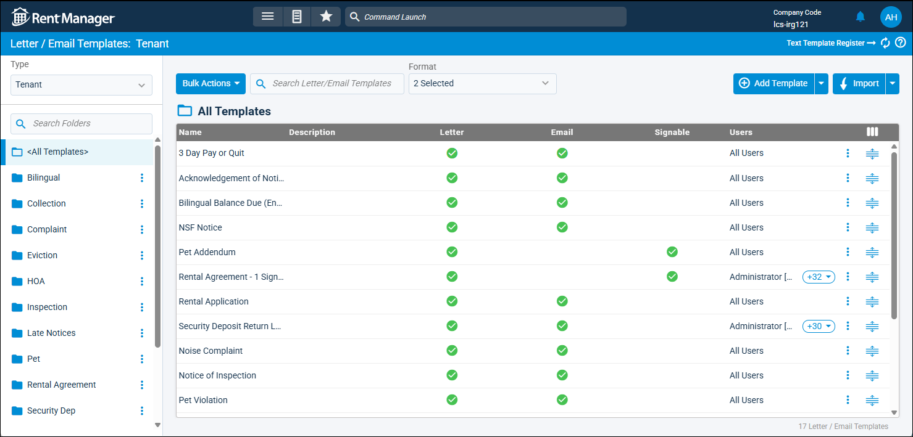
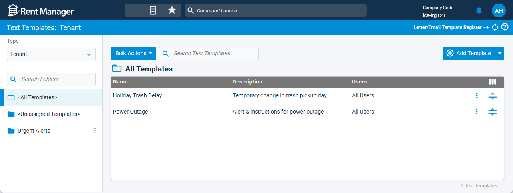

Source: https://rmxhelp.rentmanager.com/Topics/Express/KB/Letter-Message-Templates.htm
Letter and Message Templates
Rent Manager offers a variety of letter and message templates to help you save time communicating with your tenants. Templates are be created for writing letters, sending emails, and for composing text messages.
Letter and Email Templates
Letter templates are customized letters that combine static text and graphics with dynamic scripting commands. These commands allow you to generate customized content for each letter recipient. Letter templates are meant to save you time in the creation and delivery of letters. You can use letter templates for sending out community wide event notices via email or to be printed or include multiple letter templates in tenant welcome packets that contain information that tenants need when they move in.
Rent Manager also allows you to create templates for sending out mass emails to your community. To help you save time, you can create templates of the email messages you send on a recurring basis. The letter templates you created from the Letter/Email Templates page can also be used as the email body of the emails you send.
More Information
Previously created letter templates can be used as email templates. Before a letter template can be used as a template for an email, the template must first be set as a Email Template in the letter template's settings. For more information, refer to Letter/Email Template Settings (Pop-Up).
It is best practice to create a letter template for each letter type you send on recurring basis or for letters that must be sent to more than one recipient. For more information, refer to Letter/Email Templates (Page).

Text Templates
Similar to emails, Rent Manager allows you to create templates for text message broadcasts or individual text messages that you send out on a recurring basis. In situations where you want to communicate with your tenant communities so that they all get the same message or if you frequently answer similar tenant questions through text, text message templates are a great way to streamline this process. For more information, refer to Add Text Templates.
